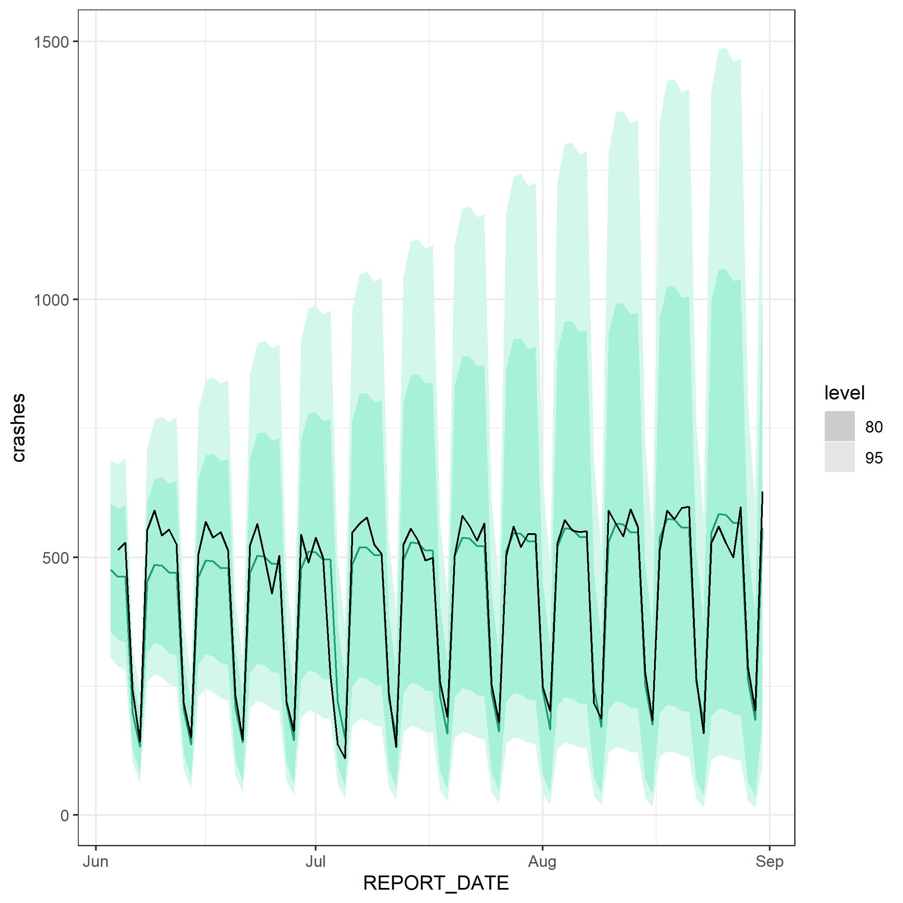
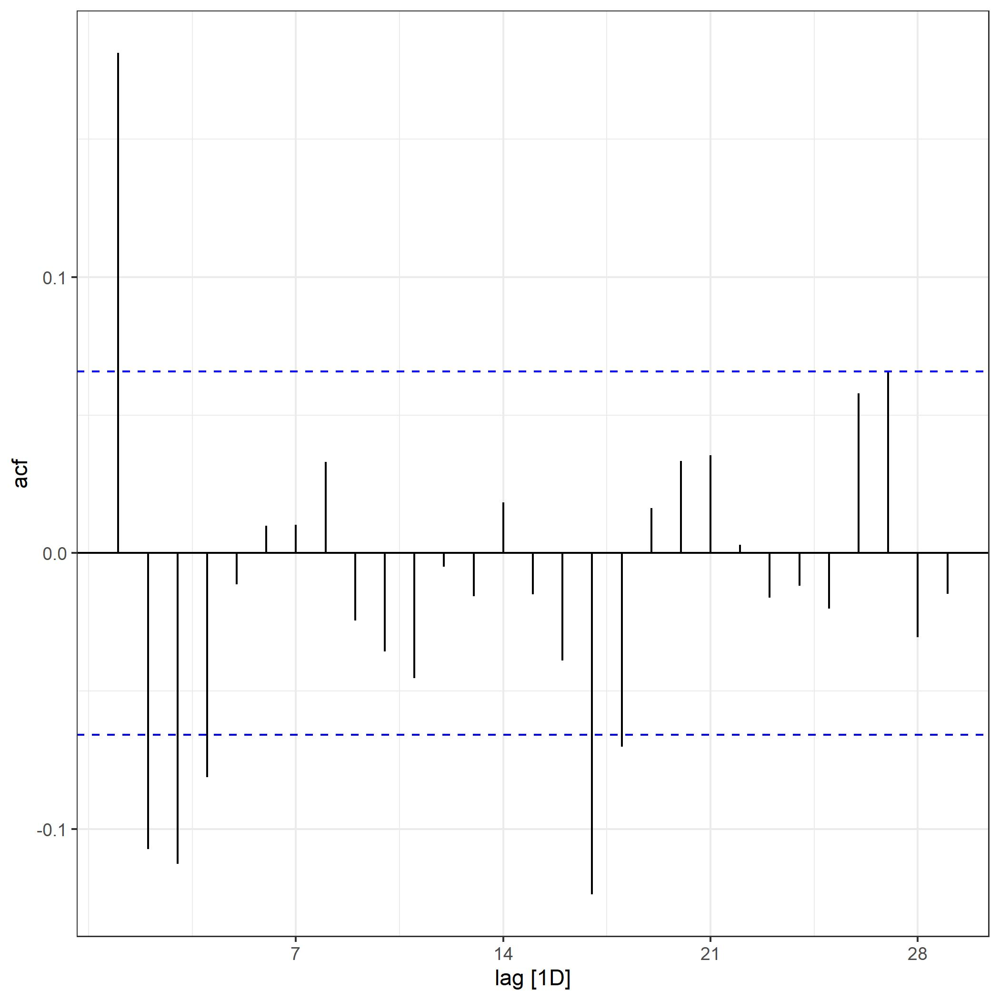
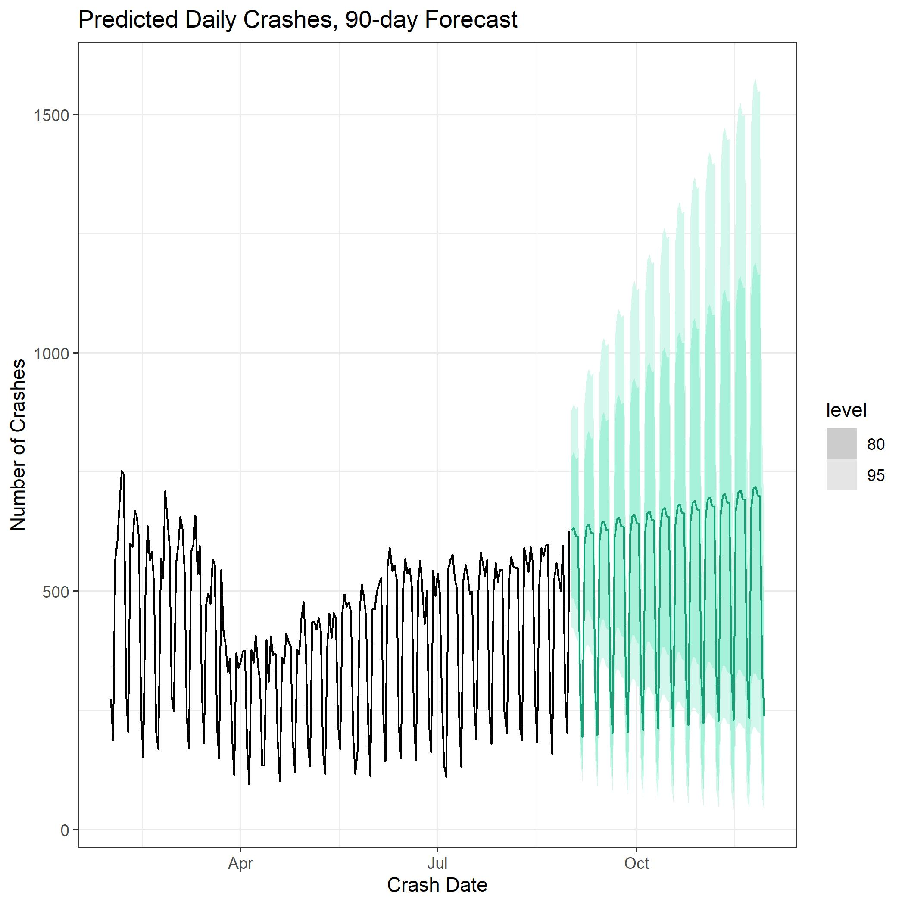

These data come from the Federal Motor Carrier Safety Administration and track details about Commercial Motor Vehicle Accidents from 2018 - 2020.
Read in Data
We’ll begin by reading in the crash data for 2018, 2019, and 2020.
# Read in data, 2018, 2019, 2020
CrashMaster2018 <- read_delim("C:/Users/Donald/Documents/Willamette University/Times Series Analysis/Project/Data/Crash_2018HDR/CrashMaster_01012018_12312018HDR.txt",
"\t", escape_double = FALSE, trim_ws = TRUE)
CrashMaster2019 <- read_delim("C:/Users/Donald/Documents/Willamette University/Times Series Analysis/Project/Data/Crash_2019HDR/CrashMaster_01012019_12312019HDR.txt",
"\t", escape_double = FALSE, trim_ws = TRUE)
CrashMaster2020 <- read_delim("C:/Users/Donald/Documents/Willamette University/Times Series Analysis/Project/Data/Crash_2020HDR/CrashMaster_01012020_12312020HDR.txt",
"\t", escape_double = FALSE, trim_ws = TRUE)
Clean-Up
We’ll combine the years together and collapse up to daily crashes on a national level.
Then we’ll check for NA values in the dataset.
All data after August 31, 2020 will be dropped from the dataset due to the potential for under counting.
Finally, REPORT_DATE will be converted into a Date class, we’ll tidy the environment up, rename “n” as “crashes”, and transform the tibble into a tsibble.
# Combine into one object
CrashesCombined <- rbind(CrashMaster2018, CrashMaster2019, CrashMaster2020)
# Collapse up to daily records
# num accidents and date
CrashesCollapsed <- CrashesCombined %>%
group_by(REPORT_DATE) %>%
count()
# Check for NAs and remove if necessary
summary(CrashesCollapsed)
## REPORT_DATE n
## Min. :20180101 Min. : 41.0
## 1st Qu.:20181002 1st Qu.: 280.0
## Median :20190702 Median : 575.0
## Mean :20190677 Mean : 496.9
## 3rd Qu.:20200401 3rd Qu.: 658.0
## Max. :20201231 Max. :1090.0
# No NAs noted
# Trim off from August 31, 2020 due to data integrity concerns
# States are oftentimes delayed on submitting crash information by around a quarter or more and as a result I doubt the reliability of data after that date. Data past Auguest 31, 2020 may under-count the number of accidents.
# 20200831 is last date to consider
CrashesTrimmed <- CrashesCollapsed %>%
filter(REPORT_DATE <= 20200831)
# Convert REPORT_DATE to a date and not a dble
Crashesfinal <- CrashesTrimmed
Crashesfinal$REPORT_DATE <- ymd(Crashesfinal$REPORT_DATE)
# Clean up Environment
rm(CrashesCollapsed, CrashesCombined, CrashesTrimmed, CrashMaster2018, CrashMaster2019, CrashMaster2020)
# Rename n as crashes
Crashesfinal <- rename(Crashesfinal, crashes = n)
# Convert object to a tsibble
Crashesfinal <- as_tsibble(Crashesfinal)
## Using `REPORT_DATE` as index variable.
# Pull out a Box Cox lambda just in case
lambdaD <-Crashesfinal %>%
features(crashes, features = guerrero) %>%
pull(lambda_guerrero)
# Take a look at our tsibble!
head(Crashesfinal)
## # A tsibble: 6 x 2 [1D]
## # Groups: @ REPORT_DATE [6]
## REPORT_DATE crashes
## <date> <int>
## 1 2018-01-01 144
## 2 2018-01-02 557
## 3 2018-01-03 683
## 4 2018-01-04 755
## 5 2018-01-05 686
## 6 2018-01-06 295
Plot the Initial Series
Now that we’ve processed our data, let’s take a look at it!
Crashesfinal %>%
autoplot() +
labs(title = "Daily Crashes 2018-01-01 to 2020-08-31",
y = "Number of Crashes",
x = "Crash Date") +
theme_bw()
## Plot variable not specified, automatically selected `.vars = crashes`

We’re dealing with daily data over about two and a half years, so there are quite a few data points.
The data appear to have some kind of pattern to them and the impact of COVID is easily seen.
It’s debatable whether a Box Cox transformation is necessary, but we’ll try nominal and transformed in our models.
Before COVID, you might be able to call the data stationary in their raw form. Unfortunately, COVID happened and we’ll certainly have to do some differencing in order to attain stationarity.
View the ACF and PACF
While we’re here, we might as well pull up the acf and pacf.
Crashesfinal %>%
gg_tsdisplay(crashes, plot_type = 'partial')

There are some very strong correlations within the data for both the ACF and PACF.
Let’s also take a quick look at the first level differenced values for the data.
Crashesfinal %>% stl(s.window = "periodic") %>% seasadj() -> crashadj
crashadj %>% diff() %>% ggtsdisplay(main = "")

We see slightly different correlations in our differenced dataset.
STL Decomposition
Now is probably a good time to look at a decomposition of the data before we dive into modeling.
# Perform a times series decomposition
crashdecomp <- Crashesfinal %>%
model(STL(crashes))
# Visualize the decomposition
components(crashdecomp) %>% autoplot() +
theme_bw()

The STL Decomposition shows us both weekly seasonality and yearly seasonality in our data.
Overall, it does a fairly decent job of splitting the data into its component parts.
The remainder still appears to have some regular spikes, but is mostly random.
Modeling Preparation
Before we move into modeling, let’s go ahead and split our data. We’ll aim for a 90 day prediction window.
crashtraining <- Crashesfinal %>%
filter_index("2018-01-01" ~ "2020-06-02")
crashtest <- Crashesfinal %>%
filter_index("2020-06-03" ~ .)
Modeling
Alright, let’s go ahead and fit our models. We’ll be fitting nominal and Box Cox transformed versions of ETS, ARIMA, and a Neural Net.
crash_fit <- crashtraining %>%
model(
ETS = ETS(crashes ~ error("A") + trend("A") + season("A")),
ETSbc = ETS(box_cox(crashes, lambdaD) ~ error("A") + trend("A") + season("A")),
ARIMA210016 = ARIMA(crashes ~ 0 + pdq(2,0,0) + PDQ(0,0,6)),
ARIMA210016bc = ARIMA(box_cox(crashes, lambdaD) ~ 0 + pdq(2,0,0) + PDQ(0,0,6)),
ARIMA = ARIMA(crashes, stepwise = FALSE, approx = FALSE),
ARIMAbc = ARIMA(box_cox(crashes, lambdaD), stepwise = FALSE, approx = FALSE),
NNET = NNETAR(crashes),
NNETbc = NNETAR(box_cox(crashes, lambdaD))
)
Forecasting
Forecast the models.
Crash_fc <- crash_fit %>%
forecast(h = 90, new_data = crashtest)
Evaluate Model Accuracy
Evaluate all the models and sort by RMSE
Crash_fc %>%
accuracy(crashtest) %>%
arrange(RMSE)
## # A tibble: 8 x 10
## .model .type ME RMSE MAE MPE MAPE MASE RMSSE ACF1
## <chr> <chr> <dbl> <dbl> <dbl> <dbl> <dbl> <lgl> <lgl> <dbl>
## 1 ETSbc Test 15.8 45.5 33.1 2.36 8.88 NA NA 0.410
## 2 ARIMAbc Test 49.0 70.4 58.4 9.26 13.8 NA NA 0.403
## 3 ARIMA Test 59.2 77.2 66.7 12.9 16.3 NA NA 0.416
## 4 ETS Test 66.0 80.5 72.5 18.1 20.7 NA NA 0.447
## 5 NNET Test 60.3 91.1 76.4 10.7 18.5 NA NA 0.450
## 6 NNETbc Test 87.6 112. 94.2 17.4 20.3 NA NA 0.324
## 7 ARIMA210016bc Test 179. 268. 217. 27.5 50.2 NA NA 0.630
## 8 ARIMA210016 Test 354. 399. 354. 78.8 78.8 NA NA 0.566
The Box Cox-Transformed ETS model is by far our best performing model.
Plot ETSbc
Let’s plot the best model against the test set.
Crash_fc %>%
filter(.model=="ETSbc") %>%
autoplot(Crashesfinal %>% filter(REPORT_DATE > as.Date("2020-06-03")), color = "#1b9e77") +
theme_bw()

ACF of ETSbc Residuals
Evaluate the Residuals ACF to see if there are remaining patterns.
crash_fit %>% select(ETSbc) %>% augment() %>% ACF(.resid) %>% autoplot() +
theme_bw()

There do appear to be some significant patterns present.
It may be possible to account for these patterns with some additional model tuning.
We’ll push forward with our current model, confident that it does a satisfactory job of predicting future crashes.
Predicting on the Whole Dataset
ETSbc_fc <- Crashesfinal %>%
model(ETSbc = ETS(box_cox(crashes, lambdaD) ~ error("A") + trend("A") + season("A"))) %>%
forecast(h = 90)
ETSbc_fc %>%
autoplot(Crashesfinal %>% filter_index("2020-02-01" ~ .), color = "#1b9e77") +
labs(title = "Predicted Daily Crashes, 90-day Forecast",
y = "Number of Crashes",
x = "Crash Date") +
theme_bw()
